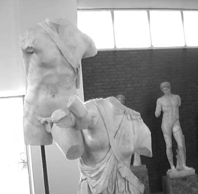
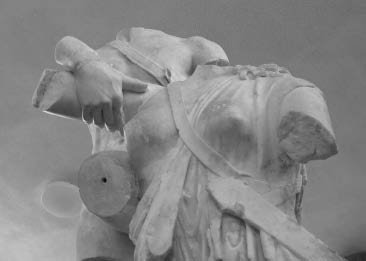

Ahilleus, Pentesileya'yı yerden kaldırırken
Yunanistanlı komutan yarı ölümsüz Ahilleus, yağmacı ve sömürgeci ordulara karşı yıllarca direnen ve destanlaşıp dillere düşen Troyalıların yiğit komutanı Hektor'u, tutuştukları teke tek dövüşte öldürdü... Ahilleus'un hızını alamayıp Hektor'un kan revan içindeki ölüsünü son hızla yerlerde sürükleyerekten, Troya surlarının çevresinde üç kez dolandırması, olayı izleyen Olimposlu tanrıları bile isyan ettirdi!.. Hatta bu dövüşü diğer tanrılarla birlikte Kazdağları'nın doruklarından izleyen tanrıça Afrodit, apar topar savaş alanına inip Hektor'un yaralı bedenine, güneşten kurumasın diye zeytinyağlı kremler çaldı...
Haliyle Troyalılar da ölümüne çok üzüldükleri komutanları Hektor'un cenaze törenleri sırasında büyük büyük ateşler yaktılar. Ağıtlarla ağlayıp dövündüler... Onların bu ateşlerle harmanlanan ağıtları, Troya surlarını aşıp bütün Anadolu halklarını uyandırdı. Yalnız Anadolu halklarını değil, derileri yanık Kuzey Afrika halklarını da uyandırdı...
Troya'nın ateşi, Karadeniz taraflarında oturan ve yalnızca kadınlardan oluşan Amazon halklarını da tutuşturdu... Gene insanlık tarihinde ilk kez, Hektor'un ölüsü için yakılan bu ateşler; Akdeniz'in ve Anadolu'nun kapsadığı bütün coğrafyalardaki halkları; tek hasımları olan yayılmacı ve sömürgecilere karşı, hiç kırılmayacak direniş alevleriyle çelikledi.
İşte bu yüzden Karadeniz kıyısında yaşayan ve Amazonlar denen kadın savaşçıların kraliçesi güzel Pentesileya (Penthesileia), hemen en seçme savaşçı arkadaşlarını derleyip doğruca kuşatma altındaki toprak kardeşleri Troya halkının yardımına koştu. Troya surlarının önüne gelir gelmez de işgalci Yunan ordularıyla hemen vuruşmaya başladılar... Fırtına gibi esen Amazon kadınların karşısında Yunanlılar, neye uğradıklarını pek anlayamadılar ilk anda!.. Troyalılar da bu dayanışmayla coşup direnişlerini daha da şahlandırdılar... Amazonların güzel kraliçesi Pentesileya, beyaz atı ve parlak miğferiyle, bu direniş ve geri püskürtme savaşının yıldızıydı... Bu yeni direnişçilerin gelişiyle savaşın yazgısının değişir gibi olduğu sıralarda Ahilleus, ölüsü yakılan dostu Patroklos'un külleriyle uğraşıyordu. Yanında yeni dostu Ayas (Aias) vardı artık. Onunla karşılıklı oturup bu savaşın nereye varıp dayanacağı ve gerçekten neyin savaşını yaptıkları konusunda dertleşiyorlardı. Tam bu sırada Amazonların geldiğini öğrenince, ikisi de hemen silahlarını kuşanıp savaş alanına koştular... Hasım cephelerin komutanları olan Ahilleus'la kraliçe Pentesileya karşı karşıya geldiler ve bir süre birbirlerine karşılıklı ok ve mızrak savurdular... Ne var ki Pentesileya'nın attığı ve her seferinde hedefini bulan okları, tanrıça Tetis'in ateş üstünde tavlayıp silah işlemez hale dönüştürdüğü oğlu Ahilleus'un bedenine çarpıp çarpıp geri sıçrıyordu! Bu arada Ahilleus'un yayından vınlayarak fırlayan zıpkın gibi bir ok, kraliçe Pentesileya'nın sağ göğsüne saplanıverdi! Bu yüzden kraliçenin bembeyaz atı aniden şahlanıp kişnedi ve güzel kraliçesinden püsküren kanla, koyu kızıldan gül kızılı renklere bulandı... Ardından Pentesileya da, artık kızıla kesilmiş atının eğerinden baş aşağı sağılıverdi... Ve sağılıp düştüğü yere gepgeniş, boylu boyunca uzanıverdi. Hemen arabasından inen Ahilleus da, kraliçeyi omuzlarından tutup yerden kaldırdı. Ne var ki onun bir kadın olduğunu görünce çarpılmışa döndü. Omuzlarından tuttuğu Pentesileya'yı bir türlü yere bırakamıyordu. Atını ve silahlarını unutuverdiği için artık rahatlayıp gülümseyen Pentesileya'nın yüzüne uzun uzun baktı... Ona bir anda deli divane vurulduğunu duyumsadı; tepeden tırnağa ürperdi. Ve elindeki silahlarından utandı. Ne var ki artık her şey için vakit çok geçti! Görünüşte Yunanistanlı güzel Helena'nın namusunu temizleme amacıyla Başkral Agamemnon'un başlattığı bu ilk kıtalararası savaşa, uzun uzun ilençler yağdırdı... Bu çirkin savaşın bir aleti olduğunu içi yanarak anladı...
Güneş tanrısı Helyos'un yaramaz oğlu Fayeton'un, bir zamanlar güneşin atlarını Afrika üstünde alçaktan koştururken derilerini yakıp kararttığı Habeşistanlılar da geldi Troyalıların yardımına... Habeşlerin gelişiyle birlikte canlanan savaş, gitgide daha da alevlendi. Başlarında yiğit kralları Memnon vardı. Ve Memnon da, Ahilleus gibi bir tanrıçadan doğmuştu. Troya surları önünde savaşırken Ahilleus'un en yakın arkadaşlarından Antilehos'u öldürdü... Gene küplere binen Ahilleus, Memnon'u öldürmeye ant içti...
Ahilleus'un anası tanrıça güzel Tetis'le Memnon'un anası tanrıça Eos, oğullarının bu ilençli savaşta birbirleriyle vuruşmalarını istemiyorlardı!.. O yüzden artık yeni can kırımlarını durdurması için, o sırada Kazdağları'ndan savaşı yönlendiren Baştanrı Zeus'un yanına gidip yardım istediler. Baştanrı Zeus, savaşı durdurmak yerine, insanların yazgılarını belirlediği altın terazisinin bir kefesine Memnon'un, öteki kefesine de Ahilleus'un yazgısını koydu... Teraziyi kaldırıp her iki kefeye baktıktan sonra da Ahilleus'un Memnon'u öldüreceğini söylemekle yetindi!.. Ve gerçekten de bu ikilinin aynı gün tutuştukları teke tek dövüşte kral Memnon, Ahilleus'un sivri kargısıyla can verdi...
Kral Memnon'un anası şafak tanrıçası Eos, gidip oğlunun ölüsünü surların önünden kendi elleriyle kaldırdı. Sonra da onu, Anadolu'yu baştan sona yürüyerekten Afrika ülkelerine doğru, ağıtlar yaka yaka, gözyaşları döke döke alıp götürdü...
Ve efsaneler; her sabah dünyamızı maviye, yeşile, safran sarısına boyarken, şafak tanrıçası Eos'un oğlu için döktüğü gözyaşlarının, bütün dünyadaki çiçeklerin üzerine yağan çiğ tanelerine dönüştüğünü söylüyordu...
Onun yaktığı ağıtları da bütün Anadolulu analar ezberlemişti...

Pentesileya ve Ahilleus (Afrodisyas Müzesi)